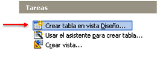
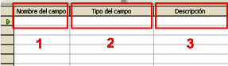
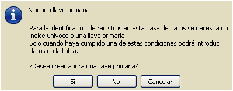
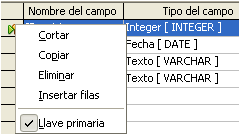
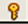
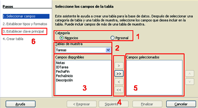

3.1. Creación de tablas
Importante
Crear una tabla consiste en definir sus campos, dándoles nombre y estableciendo el tipo de valores que contendrán y sus propiedades.
|  |
|
Panel de tareas con tablas |
- En la vista Diseño.
- Mediante el asistente de creación de tablas.
Sin embargo, exige una planificación y un diseño previo exhaustivos: nombres de los campos, tipos de datos y condiciones específicas de cada campo.
|  |
|
Creación de tabla en vista diseño |
La pantalla de creación de tablas en esta vista se presenta totalmente en blanco. Los pasos de trabajo son los siguientes:
- El nombre del campo debe ser conciso y descriptivo.
- El tipo de campo determinará lo datos que se admitirán (texto, números, fechas, etc).
- Breve descripción del contenido y el uso del campo.
Ejercicio Resuelto
Crea la tabla "Registro" en la que se dará registro de entrada y de salida a los documentos de una empresa con los siguientes campos:
- IDregistro.- tipo integer.
- Fecharegistro.- tipo fecha.
- Remitente.- tipo texto.
- Asunto.- tipo texto.
Escribe una breve descripción en cada campo y establece el campo IDregistro como llave primaria pulsando el botón derecho del ratón cuando la flecha verde esté situada en este campo.
Después guarda la tabla.
Comprueba lo aprendido
Retroalimentación
Falso
Indica el campo activo.Retroalimentación
Verdadero
La versión 3.2. admite espacios en blanco y caracteres especiales.Retroalimentación
Falso
Retroalimentación
Falso
En este panel se configuran las propiedades del campo, sus opciones varían según el tipo de campo seleccionado.Importante
La llave primaria o clave principal es un campo o conjunto de campos cuyo valor es único para cada registro y no admite valores nulos.
Antes de terminar el proceso de creación y diseño de la tabla es necesario establecer una llave primaria, clave primaria o clave principal.
Si no se establece ninguna llave primaria el programa dará un aviso antes de guardar la tabla ofreciendo crear un campo nuevo denominado ID.
|  |

|
| Notificación llave primaria | Establecer llave primaria |
Una vez establecida la llave primaria aparecerá a la izquierda del nombre de campo este símbolo: 
Asistente para la creación de tablas
|
Su funcionamiento es el siguiente:
|
 Asistente para la creación de tablas |
Ahora sólo nos queda introducir los datos en las filas, o sea, los registros.